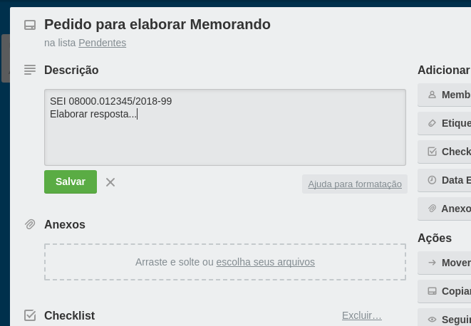
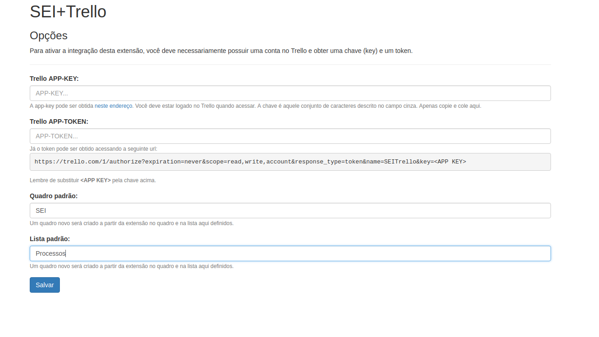

SEI+Trello
O que é?
O SEI+Trello é uma extensão do Chrome que permite uma integração entre o Sistema Eletrônico de Informações (SEI) e o Trello.
Funcionalidades
Atualmente, a extensão conta com as seguintes funcionalidades:
- Na página
controle de processos, o cartão Trello vinculado a um processo aparece no lugar do número do Processo. - O cartão Trello que aparece no SEI mostra o nome do cartão, a descrição, as etiquetas, onde se encontra (quadro e lista) e a data de entrega relacionada ao cartão. Se a data está próxima, ou atrasada, um destaque aparece junto à data.
- É possível criar um cartão novo no Trello, vinculado a um Processo. Este cartão já vem preenchido com a especificação do processo (nome do cartão) e as observações da unidade (descrição), se houver alguma.

Demonstração das funcionalidades nesta imagem.
Como vincular um cartão Trello a um Processo SEI?
Para fazer este vínculo, basta escrever na descrição do cartão a palavra SEI, seguido de um espaço, e depois o número do Processo, desta forma:
SEI 08000.012345/2018-99
Fazendo isto, em qualquer linha da descrição, o cartão já aparecerá no SEI.
Exemplo de como vincular um cartão Trello ao SEI
Configuração
Antes de começar a usar a extensão, para que ela funcione, é preciso que você possua uma conta no Trello (óbvio), obtenha a chave (key) de sua conta e gere um token de acesso para uso da extensão.
A key pode ser obtida em http://trello.com/app-key (você deve estar logado no Trello quando acessar). A chave é aquele conjunto de caracteres descrito no campo cinza.
Já o token pode ser obtido acessando a seguinte url:
https://trello.com/1/authorize?expiration=never&scope=read,write,account&response_type=token&name=SEITrello&key=<APP KEY>Lembre de substituir <APP KEY> pela chave acima.
Estas informações deve ser informadas na página de opções da extensão.
Você deve também configurar o quadro e a lista padrão para poder criar um novo cartão pelo SEI.
Página de opções.